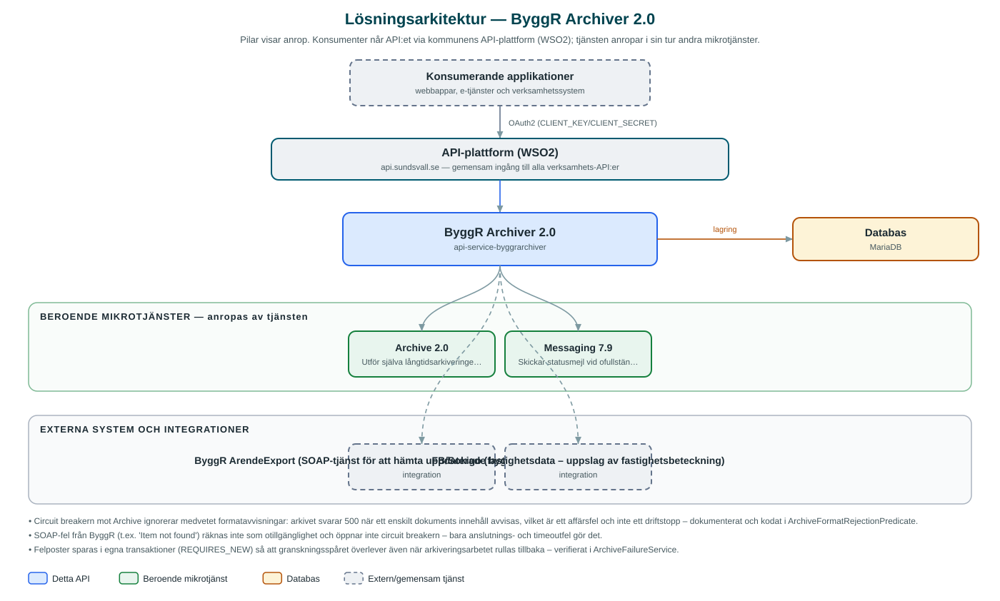

ByggR Archiver
Batchtjänst som hämtar avslutade bygglovsärenden ur ByggR och arkiverar deras handlingar i kommunens långtidsarkiv.
Om API:et
ByggR Archiver automatiserar långtidsarkiveringen av bygglovshandlingar. Tjänsten hämtar uppdaterade ärenden ur bygglovssystemet ByggR via dess SOAP-baserade exporttjänst (ArendeExport), plockar ut handlingarna och skickar dem vidare till långtidsarkivet via kommunens Archive-API. Arkiveringen körs som schemalagda batchar per kommun, med ShedLock som säkrar att bara en instans kör jobbet åt gången.
Varje batch och varje enskild handling bokförs i databasen med status, så att förloppet kan följas upp i efterhand. Misslyckade arkiveringar sparas som egna felposter i separata transaktioner – granskningsspåret överlever även om själva arkiveringsarbetet rullas tillbaka – och batchar som inte blev klara kan köras om via API:et. När en batch avslutas med ofullständigt resultat skickas ett statusmejl via Messaging.
Tjänsten har också en specialregel för geotekniska undersökningar: när en GEO-handling arkiverats slår den upp fastighetsbeteckningen i fastighetsdatasystemet FB (Sokigo) och notifierar Lantmäteriet med e-post.
Det här gör API:et
- Schemalagd batcharkivering – Hämtar uppdaterade ärenden ur ByggR för en period och arkiverar handlingarna; körs enligt cron-schema per kommun med ShedLock-låsning.
- Manuell batch och omkörning – Batchar kan startas manuellt för valfri period, och ej slutförda batchar kan köras om via API:et.
- Arkivhistorik – Varje handlings arkiveringsstatus och arkiv-id bokförs och kan frågas ut per batch eller ärende.
- Felhantering med granskningsspår – Misslyckade arkiveringar sparas som felposter i egna transaktioner och kan listas per batch och felkategori.
- Statusnotifieringar – Statusmejl skickas via Messaging när en batch avslutas utan att alla handlingar arkiverats.
- Notifiering till Lantmäteriet – Arkiverade geotekniska undersökningar (GEO) rapporteras till Lantmäteriet med fastighetsbeteckning uppslagen i FB.
API-dokumentation
API:ets samtliga resurser, parametrar och datamodeller finns beskrivna i en OpenAPI-specifikation som är hämtad ur källkodsförrådet. Den kan utforskas interaktivt i Swagger UI eller laddas ner som YAML.
Teknisk dokumentation
Nedan beskrivs hur tjänsten är uppbyggd, vilka andra tjänster den anropar och vad som krävs för att driftsätta den. Informationen är härledd ur källkoden och dess konfiguration på GitHub.
Arkitektur

API:et är en mikrotjänst (Java 25, Spring Boot via kommunens gemensamma tjänsteplattform dept44 (8.0.8), byggd med Maven). Konsumenter når tjänsten via kommunens gemensamma API-plattform (WSO2) på api.sundsvall.se – tjänsten anropas aldrig direkt. Tjänsten anropar i sin tur andra mikrotjänster i kommunens tjänstelandskap. Lagring: MariaDB med Flyway-migrationer; batch- och arkivhistorik, felposter samt ShedLock-tabell för schemaläggningslås. Övriga integrationer som förekommer i koden: ByggR ArendeExport (SOAP-tjänst för att hämta uppdaterade bygglovsärenden och handlingar), FB/Sokigo (fastighetsdata – uppslag av fastighetsbeteckning).
Teknikstack
- Språk: Java 25
- Ramverk: Spring Boot via kommunens gemensamma tjänsteplattform dept44 (8.0.8), byggd med Maven
- Databas: MariaDB med Flyway-migrationer; batch- och arkivhistorik, felposter samt ShedLock-tabell för schemaläggningslås
- Övrigt: SOAP-klient genererad ur ByggR:s WSDL, Resilience4j (retry och circuit breakers), ShedLock, jmimemagic för filtypsdetektering
Beroenden till andra mikrotjänster
Tjänsten anropar följande mikrotjänster. Versionerna är hämtade ur källkodens integrationsklienter.
| Tjänst | Version | Användning |
|---|---|---|
| Archive | 2.0 | Utför själva långtidsarkiveringen av varje handling mot Formpipe LTA. |
| Messaging | 7.9 | Skickar statusmejl vid ofullständiga batchar och notifieringsmejl till Lantmäteriet för GEO-handlingar. |
Konfiguration och driftsättning
- application.yml med URL och OAuth2-klientuppgifter för Archive- och Messaging-integrationerna samt URL:er till ByggR ArendeExport och FB
- scheduler.cron.expression och lista över municipalityIds som batcharna körs för; '-' stänger av schemaläggningen
- MariaDB-anslutning; databasschemat versionshanteras med Flyway
- E-postmottagare för statusmejl och Lantmäteriet-notifieringar konfigureras per miljö
- Logbook-filter maskerar filinnehåll (base64/binärt) i anropsloggarna
Noterbart ur källkoden
- Circuit breakern mot Archive ignorerar medvetet formatavvisningar: arkivet svarar 500 när ett enskilt dokuments innehåll avvisas, vilket är ett affärsfel och inte ett driftstopp – dokumenterat och kodat i ArchiveFormatRejectionPredicate.
- SOAP-fel från ByggR (t.ex. 'Item not found') räknas inte som otillgänglighet och öppnar inte circuit breakern – bara anslutnings- och timeoutfel gör det.
- Felposter sparas i egna transaktioner (REQUIRES_NEW) så att granskningsspåret överlever även när arkiveringsarbetet rullas tillbaka – verifierat i ArchiveFailureService.
- Äldre ej slutförda batchar befordras retroaktivt till COMPLETED när alla deras handlingar väl arkiverats – verifierat i BatchCompletionService.
- Kommentar i application.yml varnar för att sätta logbook.logs.maxBodySizeToLog, eftersom trunkering före filtren skulle läcka omaskerat filinnehåll till loggarna.
Källkod
Källkoden är öppen och finns hos Sundsvalls kommun på GitHub. I källkodsförrådet finns även instruktioner för att klona, konfigurera och starta tjänsten i egen miljö.